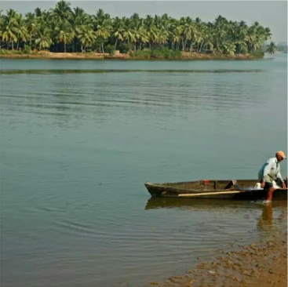

- Katale Basadi
- Barkur fort
- Saint Peter’s Church
- Bennekudru Island

At the entrance of this Jain basadi, there’s a monolithic pillar, around 20 feet tall.
A strange thing about this basadi is that in the courtyard of this structure, are temples for Nagakaali, Shiva and Vishnu.
This indicates that this place was ruled by several rulers of different religions and beliefs. We can also see carvings on the stone walls of the basadi, and a stone platform with 24 dents, which leads us to believe that it might have held idols of 24 tirthankaras earlier.

Barkur Fort is spread across 20 acres, which is now mostly in ruins. But it still makes for an exciting visit.

Around 150 years old, this gothic-style church has beautiful interiors, and is worth a visit.

Near to Barkur town, there is a beautiful island called Bennekudru that houses a 1,000-year-old temple for the mogaveera (fisherman) community. Wooden statues of people and animals are the main attractions of this place.
And many popular temples
Chowlikeri Bhairava Ganapathi and Mahalingeshwara Temple, Panchalingeshwara, Batte Vinayaka, Moodukeri Somanatha, Banashankari, Balegara Keri Maha Ganapathi and Manigara Keri Someshwara are the important temples of this area. Most of these temples sport a terracotta tile roof.